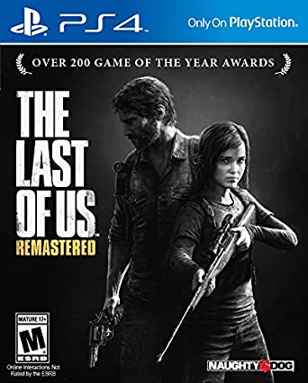
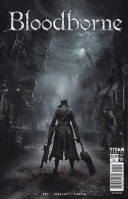

-

The Last of Us
The Last of Us es un videojuego de acción-aventura y horror de supervivencia desarrollado por la compañía estadounidense Naughty Dog y distribuido por Sony Computer Entertainment para la consola PlayStation 3 en 2013. La trama describe las vivencias de Joel y Ellie, un par de supervivientes de una pandemia en Estados Unidos que provoca la mutación de los seres humanos en criaturas caníbales.
Su desarrollo comenzó en 2009, poco después del lanzamiento del anterior juego de Naughty Dog, Uncharted 2: El reino de los ladrones y recayó en Bruce Straley y Neil Druckmann. Uno de los aspectos centrales de la narrativa del juego viene dado por el vínculo entre sus protagonistas, interpretados por los actores Troy Baker y Ashley Johnson Algunas de las influencias que permitieron establecer ciertos conceptos de The Last of Us incluyen el documental Planeta Tierra (2006),4 los libros La carretera (2006), El mundo sin nosotros (2007) y City of Thieves (2008), así como las películas No Country for Old Men (2007) y Gravity (2013). Gustavo Santaolalla, Andrew Buresh, Anthony Caruso y Jonathan Mayer estuvieron a cargo de la composición de la banda sonora.7
-

Bloodborne
Bloodborne es un videojuego de rol de acción dirigido por Hidetaka Miyazaki, desarrollado por From Software y JapanStudio distribuido por Sony Computer Entertainment para la plataforma de PlayStation 4. El videojuego sigue las acciones del personaje del jugador, el Cazador, a través de Yharnam, una ciudad ficticia de estilo victoriano, cuyos habitantes han sido afectados con una enfermedad de transmisión sanguínea anormal. Al despertar en Yharnam durante la noche de «la caza» tras recibir un tratamiento de la conocida «sangre milagrosa», el Cazador busca algo conocido solo como paleblood ("sangre pálida" en español) para terminar la cacería.
El videojuego cuenta con una vista en tercera persona y su jugabilidad se enfoca en el combate basado en armas y la exploración. Los jugadores luchan contra enemigos bestiales, entre ellos jefes, usando elementos tales como armas blancas y de fuego, viajando a través de la historia, explorando las diferentes áreas del videojuego, interaccionando con los PnJs, además de descubrir y desentrañar los numerosos misterios de ese mundo.
Fue anunciado oficialmente en el evento Electronic Entertainment Expo 2014 de Sony el 9 de junio de 2014, siendo publicado finalmente de manera internacional a finales de marzo de 2015 recibiendo aclamación de la crítica especializada. Muchos críticos aplaudieron la atmósfera y aspecto visual del videojuego, su diseño de mundo interconectado, el diseño de los personajes, en particular el de los enemigos, el desafiante juego de ritmo rápido, la historia intrigante y la banda sonora, que algunos incluso promocionan como «gloriosa».
-

God Of War
God of War es un videojuego de acción-aventura desarrollado por SCE Santa Monica Studio y publicado por Sony Interactive Entertainment. Su lanzamiento se produjo el 20 de abril de 2018, en exclusiva para la consola PlayStation 4. Se trata de la octava entrega de la serie de God of War, cronológicamente, y la secuela de God of War III. La historia se centra en la mitología nórdica y Kratos regresa como el protagonista principal.
Han pasado años desde que Kratos tomó su venganza contra los Dioses Olímpicos. Habiendo sobrevivido la pelea final contra su padre Zeus, Kratos vive ahora con su joven hijo Atreus en el mundo de los Dioses Nórdicos, una tierra hostil habitada por feroces monstruos y guerreros. Kratos deberá actuar como mentor y protector de su hijo, y tendrá que dominar la ira y enojo que tuvo durante muchos años y atar cabos sueltos.